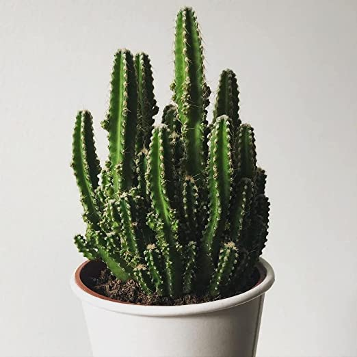
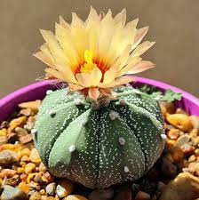
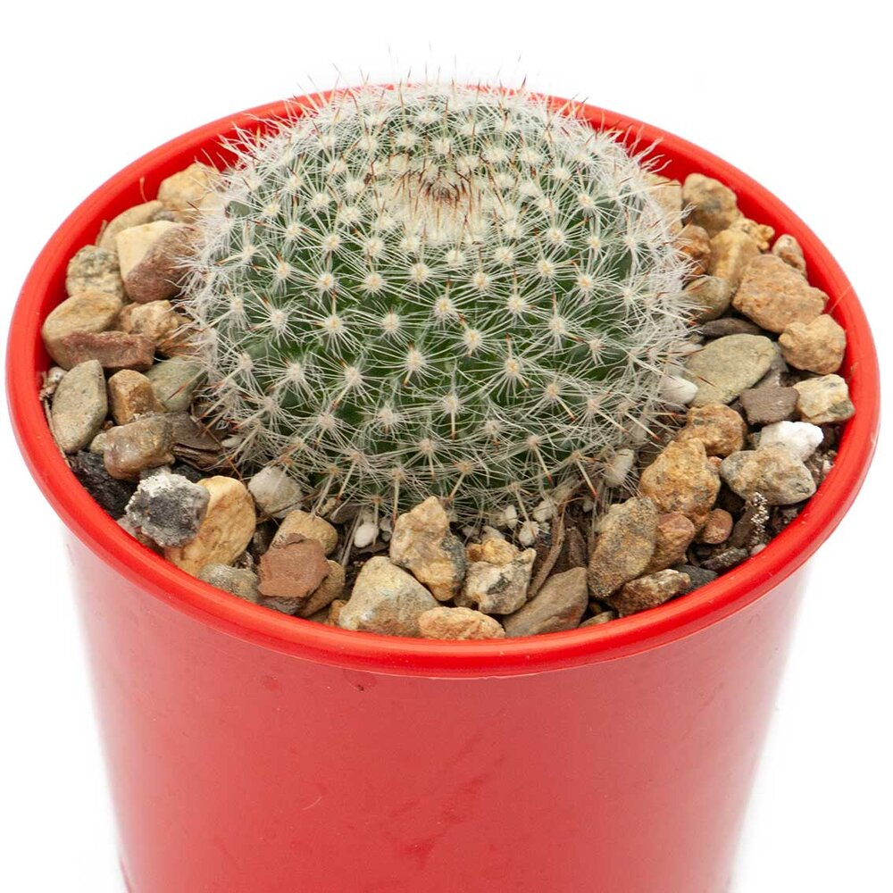
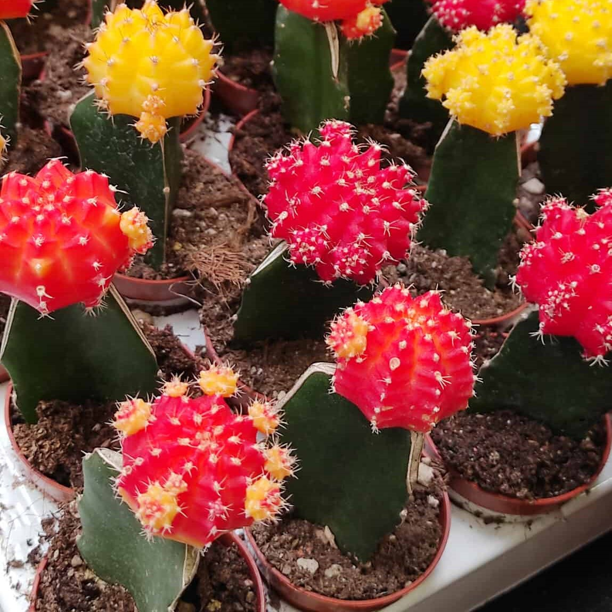
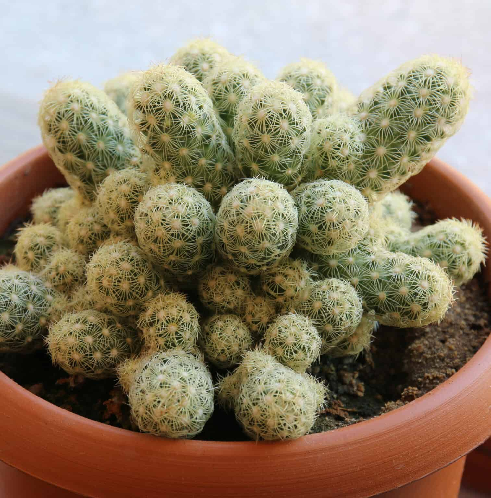
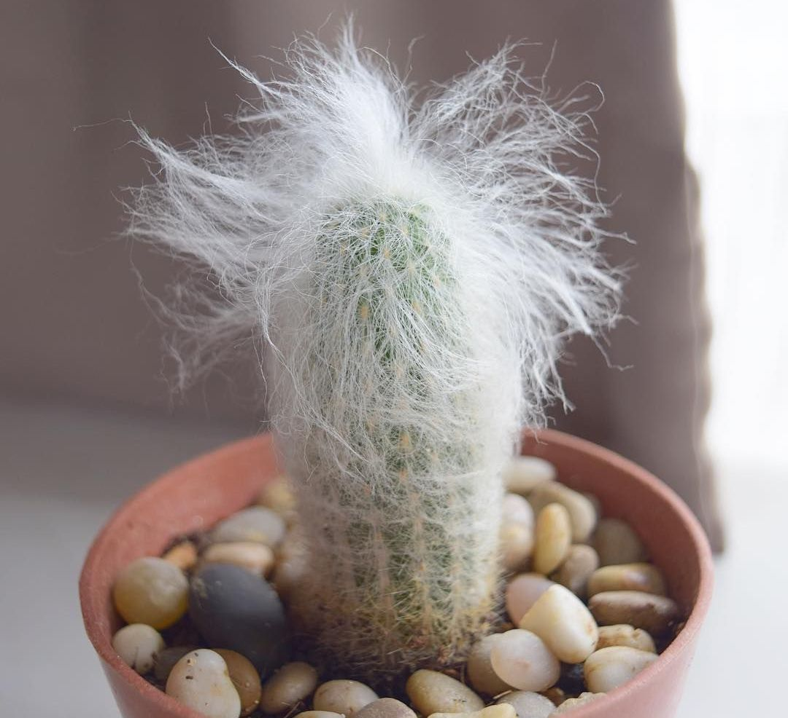
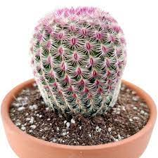
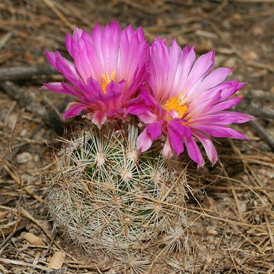
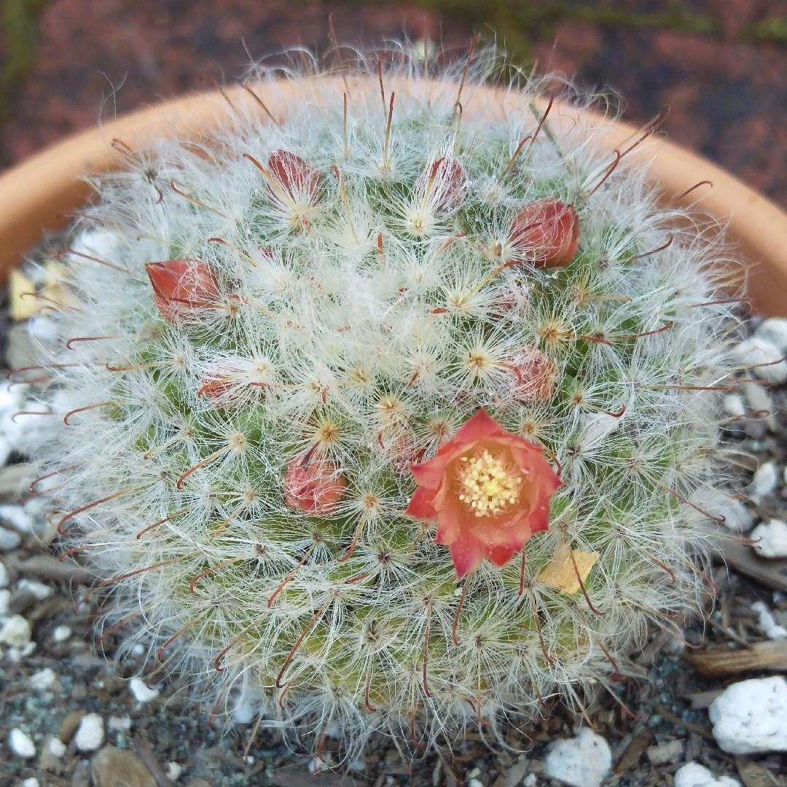

The drooping branches of the Christmas cactus plant are covered with prickly thrones. The green leaf-like flattened segments on branches are actually modified stems, whereas the spines are modified leaves. The eye-catchy flowers in the shades of yellow, red, pink, white, and even lilac can be relished during Christmas time.

Fairy Castle Cactus
RM 40.00
Information:
The fairy castle cactus is commonly kept as a houseplant due to its small size. These cacti can reach a maximum height of 6 feet, but they are very slow-growing plants so it takes a while to reach full maturity. No flowers bloom from this plant but it does have lots of curved branches that many say resemble the turrets of castles.

Star Cactus
RM 60.00
Information:
The star cactus is also known as the sea urchin cactus or starfish cactus because of its shape. They have been most commonly grown as houseplants since the 1840s. These cacti only grow to about 2-3 inches in height making them perfect indoor houseplants.

Old Lady Cactus
RM 60.00
Information:
Native to central Mexico is the Mammillaria hahniana, also known as the old lady cactus. This cactus grows to about 10 inches tall and 20 inches wide. It is covered in long white spines which is where the name 'old lady' came from. Small purple flowers grow around the top of the plant from spring to summer. This cactus makes a great house plant and is recommended for beginners because of how little it needs to be watered.

Moon Cactus
RM 20.00
Information:
A moon cactus is a mutant strain of the Gymnocalycium mihanovichii. The most popular cultivars are mutants that completely lack chlorophyll which helps expose the red, yellow, or orange pigmentation in the cactus. These cacti are typically grown as houseplants due to their small size. The moon cactus doesn’t usually grow larger than 10-12 inches tall.

Gold Lace Cactus
RM 30.00
Information:
The gold lace cactus is also known as the lady finger cactus because of its five tube-shaped stems. These cacti are covered in long yellow or brown spines that can be very sharp. In spring they produce white, yellow, and sometimes reddish-purple flowers on the upper parts of the stems. They are native to Mexico though they make good houseplants anywhere if they are given enough light.

The Old Man Cactus
RM 30.00
Information:
Also known as the bunny cactus, the old man cactus gets its name from the long white hairs that cover the entire stem. Underneath this coat of white hairs hides small yellow thorns that are quite sharp. This type of cactus is very slow growing and can take between 10 to 20 years to bloom. When it does bloom, it shows off its hard work with beautiful red, white, or yellow flowers that only fully bloom at night.

Hedgehog Cactus
RM 60.00
Information:
The hedgehog cactus is small and grows very close to the ground. It can produce over 20 stems and grows large vibrant flowers. These flowers are most commonly red and yellow in color. The plant gets its name from the spines covering its fruit, which look similar to a hedgehog. Some species of the hedgehog cactus are also referred to as pincushion cacti.

Beehive Cactus
RM 40.00
Information:
Native to North America and central Mexico the beehive cactus has almost 60 species and 20 subspecies making it one of the largest Genera of cactus. These cacti can grow between 6 to 24 inches depending on the species. Their bodies are covered in round nodules and each nodule contains 10 to 15 spines. The flower this plant grows is very large for its size and is found in shades of lavender, purple, pink, orange, white, and yellow. It produces edible berries that are normally red or yellow.

Powder Puff Cactus
RM 20.00
Information:
The Powder Puff cactus is shaped like a ball and it is a slow-growing variety of cactus which is surrounded by soft hairy spines. From the various cacti in the Mammillaria family, the Powder Puff cactus is one of the easiest to care for. The spherical cactus will grow to between 3” and 5” (7.5 - 12 cm) high and about the same in diameter.